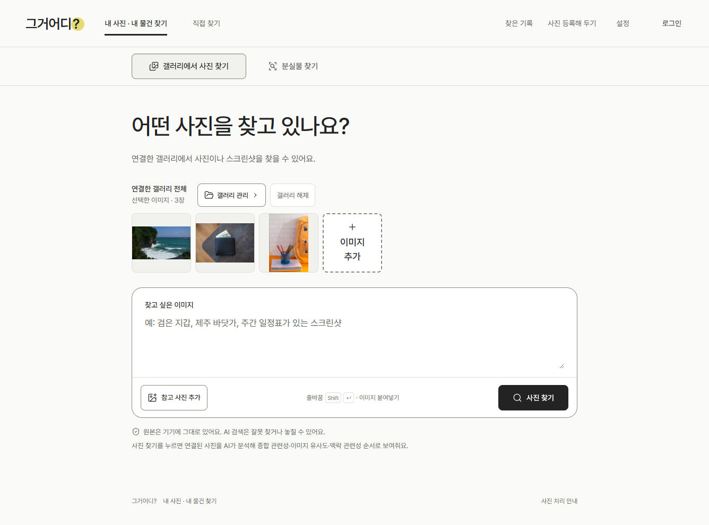
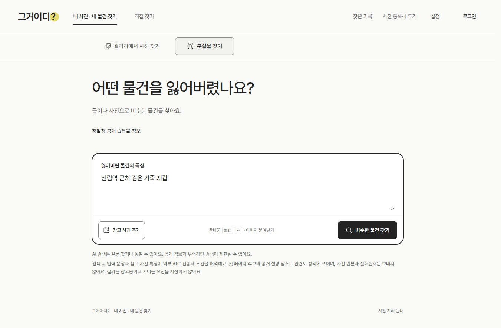
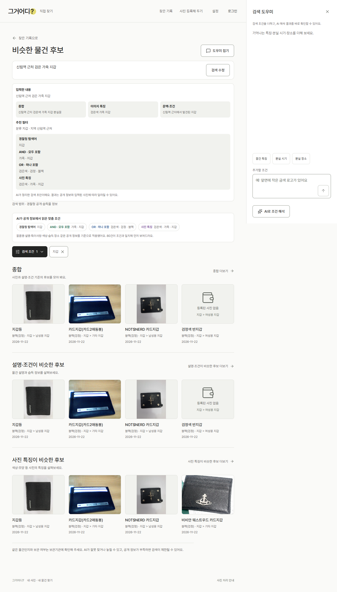
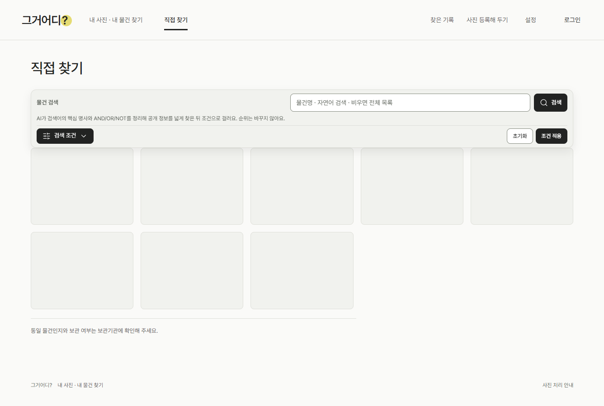
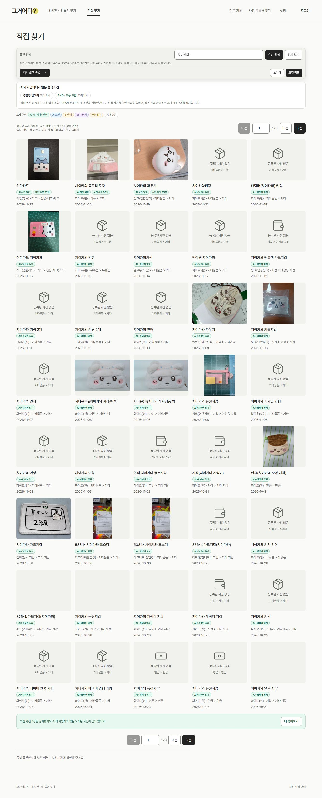

0. 백엔드에서 쓰인 것 전체
세 화면이 쓰는 모델·라이브러리·공개 API를 한 번에 정리했습니다.
① AI 모델 / 역할
multimodal
말 + 사진 + 말·사진 함께 읽기. 사진 설명, 조건 정리, 사진 채점, VLM census를 모두 맡습니다. gpt-6-luna, /chat/completions JSON 모드.
imageSimilarity
사진끼리 닮은 정도를 점수로 매깁니다. 기본 local-clip. none, openai-compatible, clip-http 선택 가능.
YOLOE
크롭 1단계에서만 씁니다. 사전학습 가중치 그대로, 객체 2개 이상이거나 종류 2가지 이상일 때만 자릅니다.
② 라이브러리 / 프레임워크
③ 공개 데이터 / 외부 연동
경찰청 15058696
전용 필터 getLosfundInfoAccToClAreaPd로 분류·색상·지역·기간을 서버에서 먼저 좁힙니다.
포털기관 15057670
getPtLosfundInfoAccToClAreaPd. 두 소스를 함께 읽고 같은 물건은 한 번만.
공식 코드표
lostfound_codes.py — 분류 45종, 색상 85코드/39표시명, 지역 17개 시도.
카카오
로그인 REST, 지도/길찾기 로컬 API. 키·토큰은 서버 env 전용, 브라우저에는 JS 키만 전달.
캐시 / 헬스
검색 300초 · 상세 24시간 · 지도 30일. /api/health와 /health 동일 응답.
평가 스크립트
eval_visual_search.py — 실사진 12건으로 R@1/R@3/MRR@5 측정.
웹 참고 자료 신규
위키 문서(리더 프록시 경유)·네이버 이미지 검색·DuckDuckGo 요약. 키 없이 공개 결과만 읽고 7일 캐시.
④ 세 화면 AI 연결 한눈에
| 화면 | AI 조건 정리 | AI 사진 점수 | AI 재정렬 | 결과 순서 |
|---|---|---|---|---|
| A. 갤러리에서 찾기 | 버튼 없음(정책) | 연결 vision/compare | 연결 | 종합·이미지·맥락 3축 |
| B. 물건 찾기 | 연결 search/prepare | 연결 vision/match-public | 연결 search/rank-context | 확정 4개 영역 |
| C. 직접 찾기 | 연결 search/prepare (말에서 시각 특징 추출) | 연결 vision/match-public 재사용 | 부분 사진 점수로 등급만 끌어올림 | 일치 등급 우선 · 등급 내 공개 API 원문 순서 |
치이카와·짱구는 D0 인터넷 참고 단계에서 설명과 참고 이미지를 먼저 임베딩해 비교합니다. “약 한 달 전”, “오래전에”라는 말은 그 시점 전후 기간 필터로 바꿔 먼저 좁힙니다. 사진 분석은 필터를 다 적용한 뒤 최신 습득일부터 8건씩 진행하고, 충분히 맞으면 일찍 멈춥니다. 50점 이상이면 사진 일치로 인정하되 조기 종료는 90점(또는 70점 3건)으로 엄격히 유지해 오래된 사진을 놓치지 않습니다. 결과는 모두 표시하며 남은 오래된 사진은 더 찾아보기로 이어서 봅니다. 류*진은 류영진·류세진으로도 찾습니다.A1. 갤러리에서 찾기 — 사진 연결·준비 로컬만
사진은 기기에서만 읽습니다. 이 단계에는 서버 AI 호출이 없습니다.

vision/compare로 넘어갑니다. AI 조건 정리 버튼은 /gallery에 두지 않습니다.✎ 이 구간 수정 요청
저장하면 오픈코드 피클이 읽고 실제 코드를 고칩니다.
A2. 갤러리에서 찾기 — 사진 유사도 비교 AI 연결됨
참고 사진과 내 사진을 같이 보고 점수를 매겨 순위를 바꿉니다.
compare_candidates.txt로 점수를 받습니다.score_similarity()로 교체하고 내림차순 정렬.아웃풋 (화면)
종합 관련성 · 이미지 유사도 · 맥락 관련성 순서로 사진을 보여줍니다. 갤러리 결과 캡처는 이 브라우저에 연결 기록이 없어 화면 대신 단계로 정리했습니다.
✎ 이 구간 수정 요청
수정할 구간을 고르고 적어 주세요.
A3. 갤러리에서 찾기 — 결과 표시 프론트
AI 점수를 3개 축으로 나눠 보여줍니다. 서버 호출은 A2에서 끝납니다.
인풋
A2가 준 점수·정렬 결과와 원본 사진 메타데이터.
아웃풋 (화면)
갤러리 사진 카드 3축 정렬. 원본은 기기에 그대로 두고 서버에 사진을 올리지 않습니다.
✎ 이 구간 수정 요청
저장하면 오픈코드 피클이 읽습니다.
B1. 물건 찾기 — 조건 정리 + 공개 수집 AI 연결됨
한 문장을 검색 조건으로 바꾸고, 공식 코드표로 공개 API를 먼저 좁힙니다.

AiSearchPlan 검증.maxPages 기본 200, 0이면 마지막까지.
✎ 이 구간 수정 요청
저장하면 오픈코드 피클이 읽습니다.
B2. 물건 찾기 — 사진 특징 매칭 AI 연결됨
“딸기 그림이 있는 지갑”처럼 말로 한 특징으로 공개 사진을 찾습니다. 사진이 없어도 됩니다.
r0…, 공개 c0…를 한 번의 멀티모달 호출로 셉니다. 객체 ≥2 또는 종류 ≥2이면 크롭 힌트.imageSimilarity 내림차순 반환.✎ 이 구간 수정 요청
저장하면 오픈코드 피클이 읽습니다.
B3. 물건 찾기 — 맥락 재정렬 + 결과 AI 연결됨
설명·조건 후보를 문맥에 맞게 다시 줄 세우고 확정 4개 영역에 담습니다.
rank_context_candidates.txt로 llm 역할이 순위를 매깁니다.✎ 이 구간 수정 요청
저장하면 오픈코드 피클이 읽습니다.
C1. 직접 찾기 — 검색어 조건 정리 AI 연결
AI는 키워드와 AND/OR뿐 아니라 말 속에 담긴 시각 특징(캐릭터·색상·브랜드·사진 속 이름)도 뽑습니다. 첨부 사진이 없어도 공개 API 사진을 비교할 특징이 생깁니다.

/api/ai/search/prepare를 한 번 부릅니다. 사진 첨부 없이도 imageFeatures가 나옵니다.criteriaFromPlan()로 API 탐색어·AND/OR·imageFeatures를 만듭니다. 브랜드·카드 종류는 넓은 탐색어 카드로 잡고 특징은 따로 보관합니다. “약 한 달 전”, “오래전에” 같은 말은 fromDate/toDate로 바꿔 조회 기간에 적용합니다.✎ 이 구간 수정 요청
저장하면 오픈코드 피클이 읽습니다.
C2. 직접 찾기 — 코드 필터·백그라운드 스캔·등급 서버
공식 코드표로 먼저 좁히고, 오래 걸리는 조회는 서버 작업으로 넘깁니다. 중복을 제거한 뒤 일치 등급을 붙입니다.
POST /api/lostfound/browse/jobs가 즉시 jobId를 줍니다. 탭을 닫거나 다른 페이지로 가도 ThreadPoolExecutor가 서버에서 계속 조회합니다. 30분 TTL.localStorage에 jobId를 저장하고 0.9초마다 GET .../jobs/{id}로 확인. 돌아오면 같은 작업 결과를 이어받습니다.exclude만 확실히 제외. 나머지는 AI/검색어/필터/부분 일치 신호를 확인해 등급 0~5를 붙이고 전부 남깁니다. 같으면 공개 API 최신순 유지.visualScore를 붙인 뒤 다시 정렬·페이지네이션합니다. 조기 종료로 안 본 사진이 남으면 visualMore를 true로 돌려줍니다.matchTier/matchLabel/visualScore 포함. 오류 없을 때만 300초 TTL 캐시. 부분 실패는 캐시하지 않습니다.
✎ 이 구간 수정 요청
저장하면 오픈코드 피클이 읽습니다.
C3. 직접 찾기 — 등급별 결과 표시 사진 점수 포함
조건에 맞는 것·안 맞는 것·AI가 찾은 것을 전부 보여주되, 신호 일치 등급 순으로 줄 세웁니다.
사진 특징 00점 배지를 따로 붙입니다.visualMore면 “최신 사진 N장을 살펴봤어요” 안내와 버튼을 보여줍니다. 누르면 실제로 본 장수만큼 skipVisual을 더해 새 백그라운드 작업을 시작하고, 더 오래된 사진부터 같은 분석을 반복합니다. 앞서 찾은 visualScore도 priorVisualScores로 같이 보내 이미 찾은 물건이 순위에서 사라지지 않게 합니다. 결과가 없을 때도 같은 버튼이 나타납니다.✎ 이 구간 수정 요청
저장하면 오픈코드 피클이 읽습니다.
D0. 인터넷 참고 자료 → 특징·임베딩 신규 중간 단계
“치이카와”, “짱구”, “먼작귀”처럼 모델이 말로만 못 알아보는 이름을 웹에서 먼저 찾습니다. B2·C2가 함께 씁니다.
인풋
자연어에서 뽑은 시각 특징 중 일반 명사를 뺀 고유명사. 예: 치이카와, 짱구.
imageFeatures에 추가하고, representative 사진 2장을 512px JPEG data URL로 만듭니다. 실패하면 빈 값으로 계속.vision/match-public이 참고 사진과 공개 분실물 사진을 CLIP으로 임베딩해 코사인 유사도를 비교합니다. 참고 사진이 작아 점수가 40점 미만이면 멀티모달이 원본 사진을 다시 직접 봅니다(낯선 캐릭터 놓침 방지).카드·하늘색)는 웹 검색에서 제외해 토큰을 아낍니다.아웃풋
imageFeatures + references. 이 값이 B2/C2의 공개 사진 비교 입력이 됩니다.
✎ 이 구간 수정 요청
저장하면 오픈코드 피클이 읽습니다.
D1. 공통 기반 — 캐시·비밀값·헬스
세 화면이 함께 쓰는 서버 기반입니다.
인풋
공개 API 응답, 캐시 키, 서버 환경변수.
/api/lostfound/map-config로 공개 키만./api/health와 /health가 같은 응답. 키·토큰 없음.아웃풋
세 화면에 공통으로 공급되는 정규화된 공개 데이터.
✎ 이 구간 수정 요청
저장하면 오픈코드 피클이 읽습니다.
D2. 파이프라인 점검 결과
실제 코드를 읽어 찾은 것들입니다. 당장과 나중으로 나눴습니다.
당장 고치면 좋은 것
| 우선 | 문제 | 근거 | 할 일 |
|---|---|---|---|
| 당장 | multimodal 설정만 넣으면 사진 경로가 503 사진 설명·census는 vlm 역할을 부르는데 AI_VLM_*는 비어 있을 수 있음 | config.py:82-103 ai_pipeline.py:43-54 ai_graph.py:54-57,183 | describe/census도 multimodal로 라우팅하거나 역할 폴백을 multimodal로 |
| 당장 | 폴백 점수에 ID 검증 없음 빠진 후보가 0점으로 조용히 섞임 | ai_pipeline.py:325-335 ai_graph.py:291-309 | rank_candidates와 같은 완전성 검사 적용 |
| 당장 | 제공자별 점수 축 불일치 원격은 코사인×100, 로컬은 재보정. 임계값 70/5는 로컬 기준 | image_similarity.py:198,227 local_vision.py:56-62 | 보정 공통화或 provider별 임계값 분리 |
| 당장 | 라벨 변환 누출·오매핑 영어 재질·무늬가 YOLOE 라벨로. 색상 별칭 누락/불일치 | local_vision.py:50-81 lostfound_codes.py:57-97 | 시각 프롬프트 값 전체 skip, 색상맵은 공식 코드표에서 생성 |
| 당장 | 공개 사진 fetch 직렬 + 리다이렉트 검증 순서 최대 12건 순차 GET, 내부 요청 후 호스트 확인, MIME 헤더 신뢰, PIL 예외 누락 | ai_graph.py:117-122 ai_pipeline.py:252-282 | bounded 병렬화 + 리다이렉트 비활성화/홉별 검증 + 스트림 크기 제한 + PIL 예외 포함 |
| 당장 | 범위 캡이 매칭보다 먼저 앞 8건만 자른 뒤 매칭 → 9번째 이후는 비교 자체가 안 됨 | local_vision.py:163-179 | 매칭 먼저, cap 나중 |
| 당장 | 만료 캐시 누적db.cache_prune() 호출 없음 | db.py:137-141 | lifespan에서 주기적 호출 |
| 당장 | AI 엔드포인트 인증·쿼터 없음 + 오류 로그 키 에코 | ai_api.py:20-55 police_api.py:66-78 | 키 마스킹, 최소 인증/레이트리밋, 미사용 AI_VISION_* 정리 |
나중에 검토
| 우선 | 문제 | 할 일 |
|---|---|---|
| 나중 | census가 target_hints를 계산하고도 프롬프트에 안 보냄 | 타깃 라벨 전달, {target, other} 확장 |
| 나중 | 설명 실패는 502, census 실패는 강등 — 강인성 비대칭 | 설명 생략 2차 경로 검토 |
| 나중 | 혼합 출처 점수 / imageSimilarity 누락 시 score로 대체 | 출처별 점수 축 명시 |
| 나중 | 재시도 없음, CLIP 1장씩, AI 결과 캐시 없음 | 지터 백오프, 배치 임베딩, 해시 키+TTL 캐시 |
| 나중 | 텍스트 점수 100 포화, 하드코딩 보정치, 임의 YOLOE 토큰 | 자동 게이트, 설정화, 토큰 allowlist |
| 나중 | 테스트 공백: local-clip 전체 invoke, 폴백 ID 검증, fetch 예외, 색상 별칭, 로그 마스킹, cache_prune | 해당 경로 테스트 추가 |
✎ 전체 수정 요청
무엇을 먼저 고칠지 적어 주세요.